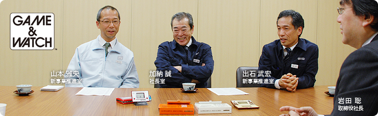
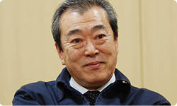
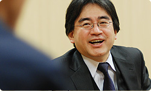

### 「ゲーム＆ウオッチ」

<DIV ID="main-visual">
<DIV ID="pagebox-wrap">
<DIV CLASS="pagebox">
<P CLASS="pagenums"><A>1. 開発者が何でもやる時代
<P CLASS="pagenum"><A HREF="index2.html">2. 電卓用のチップをそのまま利用
<P CLASS="pagenum"><A HREF="index3.html">3. 麦球を使って試作機を“工作”
<P CLASS="pagenum"><A HREF="index4.html">4. 夢中でつくりつづけた
<P CLASS="pagenum"><A HREF="index5.html">5. ３０年前の『ボール』を忠実に復刻

<DIV>

<DIV ID="int-box-wrap" CLASS="name5"><H3>
<DIV CLASS="int-box"><DIV CLASS="int-name"><P>岩田
<DIV CLASS="int-text"><P>こんにちは。
<DIV CLASS="clear"><DIV CLASS="int-box"><DIV CLASS="int-name"><P>一同
<DIV CLASS="int-text"><P>こんにちは。
<DIV CLASS="clear"><DIV CLASS="int-box"><DIV CLASS="int-name"><P>岩田
<DIV CLASS="int-text"><P>今日は、わたしにとって人生の先輩たちばかりにお訊きするという、<br>初めてのパターンでの「社長が訊く」になります。<br>今回は、ゲームボーイやニンテンドーDSのルーツである<br>任天堂初の携帯型ゲーム機『ゲーム＆ウオッチ』の<br>開発の最前線におられた方々に集まっていただきました。<br>みなさん、よろしくお願いいたします。
<DIV CLASS="clear"><DIV CLASS="int-box"><DIV CLASS="int-name"><P>一同
<DIV CLASS="int-text"><P>よろしくお願いいたします。
<DIV CLASS="clear"><DIV CLASS="int-box"><DIV CLASS="int-name"><P>岩田
<DIV CLASS="int-text"><P>最初に、みなさんが当時どんなことをされていたのか、<br>まずは加納さんからお願いします。
<DIV CLASS="clear"><DIV CLASS="int-box"><DIV CLASS="int-name"><P>加納
<DIV CLASS="int-text"><P>はい。だいぶむかしのことなので<br>記憶があいまいなところもあるんですが、<br>当時の任天堂にはデザインをする人間がとても少なくて・・・。
<DIV CLASS="clear"><DIV CLASS="int-box"><DIV CLASS="int-name"><P>岩田
<DIV CLASS="int-text"><P>それこそ加納さんは、<br>任天堂がデザインを専門とする人を採用しはじめた頃の<br>第一期生のような方ですよね。
<DIV CLASS="clear"><DIV CLASS="int-box"><DIV CLASS="int-name"><P>加納
<DIV CLASS="int-text"><P>その通りです。<br>ゲーム＆ウオッチの開発がはじまったとき、<br>わたしはクリエイティブ課という部署に所属していました。
<DIV CLASS="clear"><DIV CLASS="img-photo">
<DIV CLASS="int-box"><DIV CLASS="int-name"><P>岩田
<DIV CLASS="int-text"><P>その部署は、かつて宮本さんも所属していたセクションですよね。<br>当時、何人くらいでしたか？
<DIV CLASS="clear"><DIV CLASS="int-box"><DIV CLASS="int-name"><P>加納
<DIV CLASS="int-text"><P>わたしを含めて５名でした。<br><br>開発一部でゲーム＆ウオッチをつくることになったのですが、<br>当時、開発一部にはデザイナーがいないということで<br>助っ人として参加することになり、<br>ゲームのデザイン的なことや<br>液晶の周りの銘板のデザインとか、<br>本体の色や、パッケージなど<br>デザイン全般を担当しました。
<DIV CLASS="clear"><DIV CLASS="int-box"><DIV CLASS="int-name"><P>岩田
<DIV CLASS="int-text"><P>加納さんは、<SCRIPT LANGUAGE="JavaScript" TYPE="text/javascript">
<!--
	document.write('<A HREF="player.html?width=325&amp;height=325&amp;id=001" CLASS="thickbox 001" TITLE="Mr.ゲーム＆ウオッチ">Mr.ゲーム＆ウオッチ<'+'/A>');
//-->
</SCRIPT><NOSCRIPT><A HREF="img/slide001.jpg">Mr.ゲーム＆ウオッチ</NOSCRIPT>と呼ばれる<br>キャラクターのデザインから、外の箱に至るまで、<br>デザインに関わることは何でも担当されたんですよね。
<DIV CLASS="clear"><DIV CLASS="int-box"><DIV CLASS="int-name"><P>加納
<DIV CLASS="int-text"><P>そうです。<br>それこそ“何でも屋”に近かったです。<br>でも、それはわたしだけでなく、<br>スタッフみんなが何でも屋みたいな時代でした。
<DIV CLASS="clear"><DIV CLASS="int-box"><DIV CLASS="int-name"><P>岩田
<DIV CLASS="int-text"><P>出石（いずし）さんはどんなことをされていたんですか？
<DIV CLASS="clear"><DIV CLASS="int-box"><DIV CLASS="int-name"><P>出石
<DIV CLASS="int-text"><P>わたしが担当したのは<br>ゲームを動かすためのソフトウェアを組むことで、<br>その仕事は山本さんと２人で担当していました。
<DIV CLASS="clear"><DIV CLASS="img-photo">
<DIV CLASS="int-box"><DIV CLASS="int-name"><P>山本
<DIV CLASS="int-text"><P>わたしと出石さんとで、<br>担当するソフトを交互にプログラムしていたんです。<br>それに、加納さんが言ったように“何でも屋”のところがあって、<br>ゲームのアイデア会議にも参加させてもらって<br>自分からもアイデアを出したりして、<br>ワイワイガヤガヤ言いながらつくっていました。
<DIV CLASS="clear"><DIV CLASS="int-box"><DIV CLASS="int-name"><P>岩田
<DIV CLASS="int-text"><P>そもそも当時は、プログラマーと企画者とハード技術者は<br>いまほど職制が明確に分かれていなかったんですよね。
<DIV CLASS="clear"><DIV CLASS="int-box"><DIV CLASS="int-name"><P>出石
<DIV CLASS="int-text"><P>その通りです。
<DIV CLASS="clear"><DIV CLASS="int-box"><DIV CLASS="int-name"><P>岩田
<DIV CLASS="int-text"><P>だから、ハード技術者として入ってきた人でも、<br>プログラムも書いたし、アイデアも出したし、<br>場合によっては工作もしたし（笑）。
<DIV CLASS="clear"><DIV CLASS="int-box"><DIV CLASS="int-name"><P>山本
<DIV CLASS="int-text"><P>はい。工作もしました。<br>それに最後は量産の段取りまで担当しました。
<DIV CLASS="clear"><DIV CLASS="int-box"><DIV CLASS="int-name"><P>出石
<DIV CLASS="int-text"><P>さらに、最終的には<br>コマーシャル撮りにも行きました（笑）。
<DIV CLASS="clear"><DIV CLASS="int-box"><DIV CLASS="int-name"><P>山本
<DIV CLASS="int-text"><P>行きましたね、コマーシャル撮りにも。<br>撮影現場に入ったら、スタッフのみなさんが<br>午後なのに「おはようございます」と挨拶していて、<br>なんか変だなあと思ったりして。
<DIV CLASS="clear"><DIV CLASS="img-photo">
<DIV CLASS="int-box"><DIV CLASS="int-name"><P>岩田
<DIV CLASS="int-text"><P>（笑）
<DIV CLASS="clear"><DIV CLASS="int-box"><DIV CLASS="int-name"><P>出石
<DIV CLASS="int-text"><P>僕らは裏方として、大きな箱の下に隠れて<br>ゲームをするのが役目でした。
<DIV CLASS="clear"><DIV CLASS="int-box"><DIV CLASS="int-name"><P>岩田
<DIV CLASS="int-text"><P>箱の下に隠れてゲームをするんですか？（笑）
<DIV CLASS="clear"><DIV CLASS="int-box"><DIV CLASS="int-name"><P>出石
<DIV CLASS="int-text"><P>そうなんです。<br>僕たちは箱の下に隠れて<br>ケーブルでつないだゲームを操作する役目でした。<br>箱の表には照明があたっていて、<br>そこにゲーム＆ウオッチが置いてあって、<br>タレントさんがそれを遊んでいるかのように撮影するんですね。<br>撮影時間がとても長かったものですから、<br>箱の外に出るとすごく明るかったのを覚えています。
<DIV CLASS="clear"><DIV CLASS="int-box"><DIV CLASS="int-name"><P>岩田
<DIV CLASS="int-text"><P>あははは（笑）。
<DIV CLASS="clear"><DIV CLASS="int-box"><DIV CLASS="int-name"><P>出石
<DIV CLASS="int-text"><P>でも、すごく貴重な体験をさせてもらいました。
<DIV CLASS="clear"><DIV CLASS="int-box"><DIV CLASS="int-name"><P>山本
<DIV CLASS="int-text"><P>本当に貴重な経験でしたね。
<DIV CLASS="clear"><DIV CLASS="int-box"><DIV CLASS="int-name"><P>岩田
<DIV CLASS="int-text"><P>マルチスクリーン<sup>（※1）</sup>の宣伝はよく覚えています。
<DIV CLASS="clear"><DIV CLASS="int-box"><DIV CLASS="int-name"><P>出石・山本
<DIV CLASS="int-text"><P>（口をそろえて）♪マールチ、ラララ、マルチ。
<DIV CLASS="clear"><DIV CLASS="int-box"><DIV CLASS="int-name"><P>岩田
<DIV CLASS="int-text"><P>そうですそうです（笑）。
<DIV CLASS="clear"><DIV CLASS="img-photo">
<DIV CLASS="int-box"><DIV CLASS="int-name"><P>出石
<DIV CLASS="int-text"><P>箱の下に入ってずっと聴いていましたから<br>よく覚えているんです。
<DIV CLASS="clear"><DIV CLASS="int-box"><DIV CLASS="int-name"><P>一同
<DIV CLASS="int-text"><P>（笑）
<DIV CLASS="notes-box"><DIV CLASS="notes-num"><P>※1
<DIV CLASS="notes-text"><P>マルチスクリーン＝２画面で折りたたみ式のゲーム＆ウオッチ。１９８２年５月の<SCRIPT LANGUAGE="JavaScript" TYPE="text/javascript">
<!--
	document.write('<A HREF="player.html?width=300&amp;height=350&amp;id=002" CLASS="thickbox 002" TITLE="『オイルパニック』">『オイルパニック』<'+'/A>');
//-->
</SCRIPT><NOSCRIPT><A HREF="img/slide002.jpg">『オイルパニック』</NOSCRIPT>で初登場。

<DIV CLASS="clear">
<DIV CLASS="clear">

<DIV CLASS="clear">
<DIV CLASS="clear"><DIV CLASS="int-box"><DIV CLASS="int-name"><P>岩田
<DIV CLASS="int-text"><P>ちなみに、みなさんは入社年次で言うと、<br>何年頃になるんですか？
<DIV CLASS="clear"><DIV CLASS="int-box"><DIV CLASS="int-name"><P>加納
<DIV CLASS="int-text"><P>僕が入ったのがいちばん最初で、１９７２年の入社です。<br>当時の任天堂には開発セクションはひとつしかなくて、<br>入ってすぐに「開発部」というところに配属されました。
<DIV CLASS="clear"><DIV CLASS="int-box"><DIV CLASS="int-name"><P>岩田
<DIV CLASS="int-text"><P>その頃、開発部全体では何人おられたんですか？
<DIV CLASS="clear"><DIV CLASS="int-box"><DIV CLASS="int-name"><P>加納
<DIV CLASS="int-text"><P>２０名くらいだったでしょうか・・・？<br>そこでボードゲームやミニゲームシリーズの<br>デザインに関わりました。
<DIV CLASS="clear"><DIV CLASS="int-box"><DIV CLASS="int-name"><P>岩田
<DIV CLASS="int-text"><P>１９７２年頃は、ハイテクとは無縁の<br>ボードゲームのデザインをされていたんですね。<br>出石さんが入社したのは？
<DIV CLASS="clear"><DIV CLASS="int-box"><DIV CLASS="int-name"><P>出石
<DIV CLASS="int-text"><P>１９７５年の入社です。<br>わたしも最初は開発部に配属されて、<br>『光線銃カスタム』<sup>（※2）</sup>のターゲットをつくっていました。<br>銃を撃って的に命中したら、人形がこけるんですけど、<br>その人形のデザインをしてくれたのが加納さんだったんですね。
<DIV CLASS="clear"><DIV CLASS="int-box"><DIV CLASS="int-name"><P>加納
<DIV CLASS="int-text"><P>
<SCRIPT LANGUAGE="JavaScript" TYPE="text/javascript">
<!--
	document.write('<A HREF="player.html?width=500&amp;height=339&amp;id=003" CLASS="thickbox 003" TITLE="『ガンマン』と『ライオン』">『ガンマン』と『ライオン』<'+'/A>');
//-->
</SCRIPT><NOSCRIPT><A HREF="img/slide003.jpg">『ガンマン』と『ライオン』</NOSCRIPT>ですね。
<DIV CLASS="clear"><DIV CLASS="int-box"><DIV CLASS="int-name"><P>出石
<DIV CLASS="int-text"><P>で、わたしはメカの部分に関わらせてもらったのですが、<br>筐体の設計からパッケージに関すること、<br>また、「こうしたら面白い」というアイデアの部分も含めて、<br>そのときも何でもやっていました。<br>で、そのあとにテレビゲームをつくるようになりまして、<br>当時はまだ、ソフトの入れ替えができないタイプの・・・。
<DIV CLASS="clear"><DIV CLASS="int-box"><DIV CLASS="int-name"><P>岩田
<DIV CLASS="int-text"><P>
<SCRIPT LANGUAGE="JavaScript" TYPE="text/javascript">
<!--
	document.write('<A HREF="player.html?width=280&amp;height=392&amp;id=004" CLASS="thickbox 004" TITLE="『テレビゲーム６』と『１５』">『テレビゲーム６』と『１５』<'+'/A>');
//-->
</SCRIPT><NOSCRIPT><A HREF="img/slide004.jpg">『テレビゲーム６』と『１５』</NOSCRIPT><sup>（※3）</sup>ですね。
<DIV CLASS="clear"><DIV CLASS="int-box"><DIV CLASS="int-name"><P>出石
<DIV CLASS="int-text"><P>はい。わたしはそのあとに発売された<br><SCRIPT LANGUAGE="JavaScript" TYPE="text/javascript">
<!--
	document.write('<A HREF="player.html?width=620&amp;height=334&amp;id=005" CLASS="thickbox 005" TITLE="『レーシング１１２』">『レーシング１１２』<'+'/A>');
//-->
</SCRIPT><NOSCRIPT><A HREF="img/slide005.jpg">『レーシング１１２』</NOSCRIPT><sup>（※4）</sup>や<SCRIPT LANGUAGE="JavaScript" TYPE="text/javascript">
<!--
	document.write('<A HREF="player.html?width=280&amp;height=398&amp;id=006" CLASS="thickbox 006" TITLE="『ブロック崩し』">『ブロック崩し』<'+'/A>');
//-->
</SCRIPT><NOSCRIPT><A HREF="img/slide006.jpg">『ブロック崩し』</NOSCRIPT><sup>（※5）</sup>などを<br>ハード屋さんとして、設計しました。
<DIV CLASS="notes-box"><DIV CLASS="notes-num"><P>※2
<DIV CLASS="notes-text"><P>『光線銃カスタム』＝当たる光の量によって抵抗値が変化するセンサーを使った電子玩具。１９７６年に『光線銃カスタム ガンマン』と『光線銃カスタム ライオン』の２種類が発売された。

<DIV CLASS="clear">
<DIV CLASS="clear">
<DIV CLASS="notes-box"><DIV CLASS="notes-num"><P>※3
<DIV CLASS="notes-text"><P>『テレビゲーム６』と『１５』＝ともに１９７７年に発売されたテレビゲーム。それぞれ６種類、１５種類のテニスや卓球などのゲームを遊ぶことができた。

<DIV CLASS="clear">
<DIV CLASS="clear">
<DIV CLASS="notes-box"><DIV CLASS="notes-num"><P>※4
<DIV CLASS="notes-text"><P>『レーシング１１２』＝ハンドルとギアがついたテレビゲーム機。１９７８年発売。

<DIV CLASS="clear">
<DIV CLASS="clear">
<DIV CLASS="notes-box"><DIV CLASS="notes-num"><P>※5
<DIV CLASS="notes-text"><P>『ブロック崩し』＝６種類の『ブロック崩し』が楽しめたテレビゲーム機。本体デザインは宮本茂が担当。１９７９年発売。

<DIV CLASS="clear">
<DIV CLASS="clear">

<DIV CLASS="clear">
<DIV CLASS="clear"><DIV CLASS="int-box"><DIV CLASS="int-name"><P>岩田
<DIV CLASS="int-text"><P>山本さんは出石さんの何年後の入社になるんですか？
<DIV CLASS="clear"><DIV CLASS="int-box"><DIV CLASS="int-name"><P>山本
<DIV CLASS="int-text"><P>７８年ですから、出石さんの３年後です。<br>わたしは、入社してすぐに<br>新人研修というかたちで、宇治工場の製造部に配属されました。<br>そこで、アーケードゲームの製造のお手伝いをして、<br>翌年、開発二部に配属になりました。
<DIV CLASS="clear"><DIV CLASS="int-box"><DIV CLASS="int-name"><P>岩田
<DIV CLASS="int-text"><P>山本さんが入社したときは<br>開発部は開発一部と二部に分かれていたんですね。
<DIV CLASS="clear"><DIV CLASS="int-box"><DIV CLASS="int-name"><P>山本
<DIV CLASS="int-text"><P>そうです。わたしが配属されたときは<br>『ブロック崩し』の開発が終わったあとで、<br>「次に何をつくろうか？」という話になって、<br>新しいゲームの試作品をつくったりしていました。<br>製品化の際には、ＬＳＩをつくるために<br>必要なマスクパターンを手描きで設計していました。
<DIV CLASS="clear"><DIV CLASS="img-photo">
<DIV CLASS="int-box"><DIV CLASS="int-name"><P>岩田
<DIV CLASS="int-text"><P>当時は、ゲーム機にはコンピュータが使われていなかったので、<br>プログラムを書くのではなく、ハードで遊びを実現されていたんですよね。
<DIV CLASS="clear"><DIV CLASS="int-box"><DIV CLASS="int-name"><P>山本
<DIV CLASS="int-text"><P>当時はコンピュータが一般的ではなかったですから。
<DIV CLASS="clear"><DIV CLASS="int-box"><DIV CLASS="int-name"><P>出石
<DIV CLASS="int-text"><P>当時のゲームは<br>ハード屋さんがつくっていたんです。
<DIV CLASS="clear"><DIV CLASS="int-box"><DIV CLASS="int-name"><P>岩田
<DIV CLASS="int-text"><P>ひとつのゲームのために<br>それ専用のハードをつくっていたんですね。
<DIV CLASS="clear"><DIV CLASS="int-box"><DIV CLASS="int-name"><P>出石
<DIV CLASS="int-text"><P>だから、ハード屋さんが<br>「ここのスピードはもっと速くしたい」と思ったら、<br>はんだごてを持ってきて配線を変えたりしていました。<br>それをみんなで遊んでもらって、<br>「う〜ん、もうちょっとかな」とか言いながら<br>延々と調整する作業を繰り返し、<br>「これでいこう！」となってから量産に入っていたんです。
<DIV CLASS="clear"><DIV ID="asks-pagination">
<DIV ID="page-next"><A HREF="index2.html">2. 電卓用のチップをそのまま利用
<DIV CLASS="clear">
<DIV CLASS="clear">
<DIV ID="ftr">
<P CLASS="home"><A HREF="../../../../index.html">任天堂ホームページ
<P CLASS="pagetop"><A HREF="#pagetop">ページの一番上へ
<DIV CLASS="clear">

<DIV CLASS="clear">
</BODY>
</HTML>
